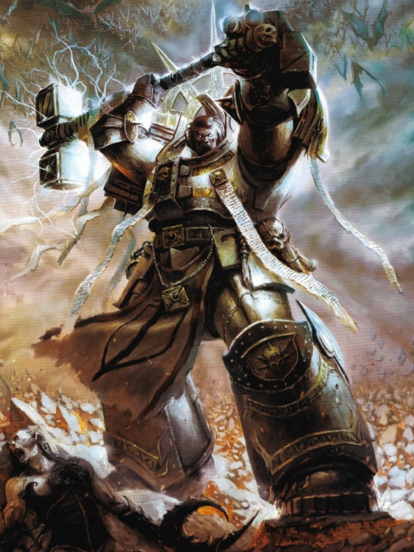
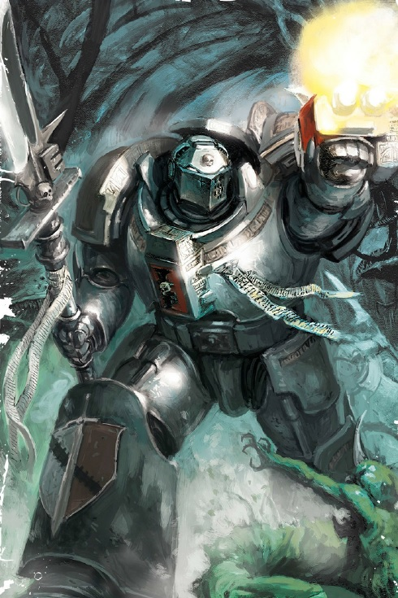
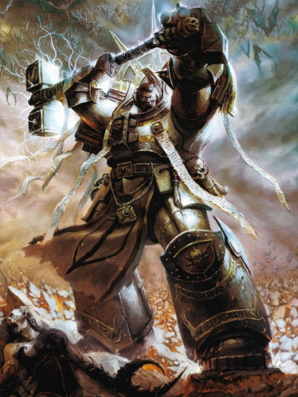
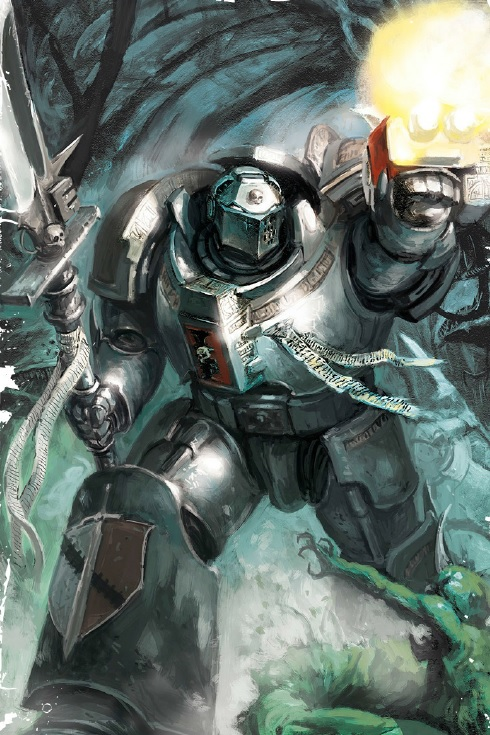

Grey Knights page 3
Photos of Grey Knights
Grey Knights armor is infused with holy text and divine sigils to ward off the attacks of any daemonic foe, should they so choose to make the mistake of attacking a Grey Knight.
 Grey Knights armor is infused with holy text and divine sigils to ward off the attacks of any daemonic foe, should they so choose to make the mistake of attacking a Grey Knight.
 